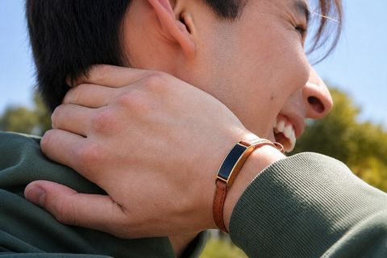
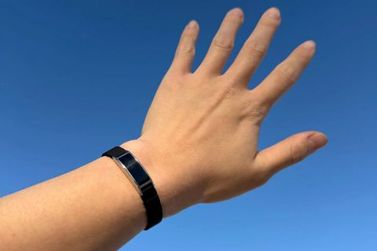
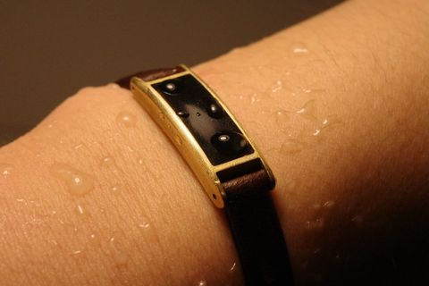
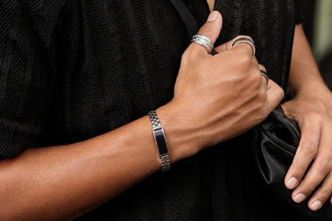
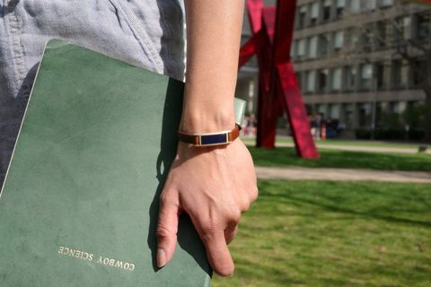
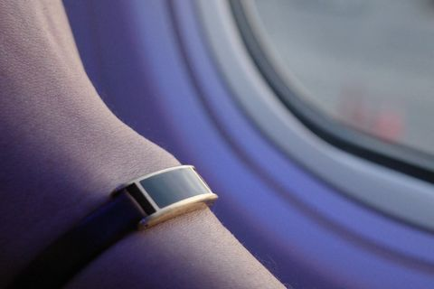
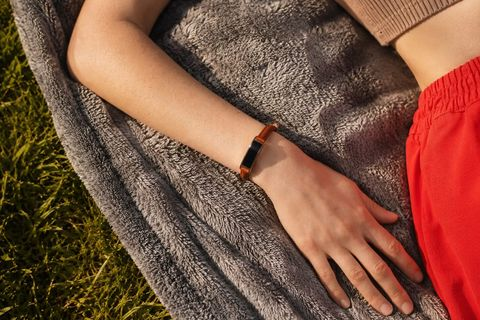
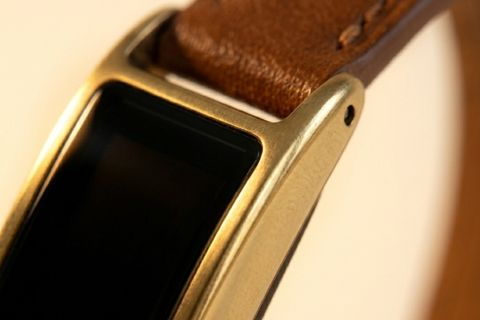

One Ray. 38 alternatives.
A practical guide to the health trackers people buy now, the ones arriving next, and the products that shaped the category. Every page links back to a primary product or support source.
Looking for a light-powered WHOOP alternative? Meet Ray →Start with the health tracker guides →
Available now

Ray vs. Amazfit Band 7A $49.99 screen band with long battery life, compared with Ray.
Ray vs. Amazfit Helio RingA $149.99 ring built to pair with Amazfit watches, compared with a standalone band. Ray vs. Apple Watch Series 11Apple Watch is a wrist computer. Ray is a 7-gram health tracker with no screen.
Ray vs. Apple Watch Series 11Apple Watch is a wrist computer. Ray is a 7-gram health tracker with no screen.
Ray vs. Bellabeat Ivy+Bellabeat's women's wellness bracelet, compared with Ray. Ray vs. Bellabeat LeafA clip-on tracker you can wear as a necklace, compared with Ray.
Ray vs. Bellabeat LeafA clip-on tracker you can wear as a necklace, compared with Ray. Ray vs. Fitbit Charge 6Fitbit's screen band packs in GPS and ECG. Ray leaves out the screen and the charger.
Ray vs. Fitbit Charge 6Fitbit's screen band packs in GPS and ECG. Ray leaves out the screen and the charger.
Ray vs. Fitbit Inspire 3Fitbit's budget screen tracker, compared with a screen-free band that runs on light.- Ray vs. Garmin Index Sleep MonitorA sleep-only armband, compared with a tracker you wear day and night.
- Ray vs. Garmin Lily 2A small fashion smartwatch from Garmin, compared with a screen-free band.
 Ray vs. Garmin vívosmart 5Garmin's slim screen band, compared with a lighter band that never charges.
Ray vs. Garmin vívosmart 5Garmin's slim screen band, compared with a lighter band that never charges.
Ray vs. Google Pixel Watch 4Google's smartwatch, compared with a screen-free tracker you never charge.
Ray vs. HUAWEI Band 10A thin AMOLED band from HUAWEI, compared with a screen-free band that runs on light.- Ray vs. Luna Ring 2.0A $300 subscription-free smart ring, compared with a light-powered band.

Ray vs. Morpheus M7A chest-strap training system and an all-day wrist tracker do different jobs.- Ray vs. Oura Ring 4Oura Ring 4 is the best-known smart ring. Here's how a light-powered wristband compares.
- Ray vs. Polar LoopTwo screen-free bands with no subscription. One charges from a cable, the other from light.
- Ray vs. RingConn Gen 2A 2–3 gram ring with sleep-apnea monitoring, compared with a light-powered band.
- Ray vs. RingConn Gen 2 AirA $199 steel smart ring, compared with a light-powered wristband.

Ray vs. RingConn Gen 3RingConn's latest ring has no subscription. The difference is ring versus wrist, and case versus light. Ray vs. Samsung Galaxy RingSamsung's smart ring, compared with a light-powered wristband. Neither charges a monthly fee.
Ray vs. Samsung Galaxy RingSamsung's smart ring, compared with a light-powered wristband. Neither charges a monthly fee.- Ray vs. Samsung Galaxy Watch8Samsung's smartwatch, compared with a screen-free tracker you never charge.
 Ray vs. Ultrahuman Ring AIRUltrahuman's lightweight ring, compared with a band that never needs charging.
Ray vs. Ultrahuman Ring AIRUltrahuman's lightweight ring, compared with a band that never needs charging.- Ray vs. Ultrahuman Ring PROUltrahuman's newest ring costs $479. Ray takes a different approach for less.
 Ray vs. WHOOP 5.0Both are screen-free bands. The difference is WHOOP's coaching membership versus Ray's no-subscription, light-powered design.
Ray vs. WHOOP 5.0Both are screen-free bands. The difference is WHOOP's coaching membership versus Ray's no-subscription, light-powered design.- Ray vs. Withings ScanWatch 2An analog watch with ECG and a month of battery, compared with Ray.
- Ray vs. Xiaomi Smart Band 10A bright screen and weeks of battery for a low price, compared with Ray.
Other current listings
- Ray vs. Amazfit Helio StrapA $99.99 screen-free strap from Amazfit, compared with Ray's light-powered band.Listed, currently out of stock
- Ray vs. Circular Ring 2Circular Ring 2 is still a crowdfunded pre-order. Ray is a product you can buy now.Pre-order
- Ray vs. Evie RingA smart ring designed around women's health, compared with Ray.Listed, currently out of stock
- Ray vs. Polar 360Polar 360 is a platform businesses build products on. Ray is a tracker you can buy.Available through partners
The tracker archive
- Ray vs. Basis PeakBasis Peak was recalled and discontinued. Here's what a current alternative looks like.
- Ray vs. Fitbit Flex 2Fitbit Flex 2 is discontinued. Here's what a current alternative looks like.
- Ray vs. Jawbone UP3Jawbone UP3 is discontinued. Here's what a current alternative looks like.
- Ray vs. Microsoft Band 2Microsoft Band 2 is discontinued. Here's what a current alternative looks like.
- Ray vs. Misfit Shine 2Misfit Shine 2 is discontinued. Here's what a current alternative looks like.
- Ray vs. Motiv RingMotiv Ring is discontinued. Here's what a current alternative looks like.
- Ray vs. Nike+ FuelBand SENike+ FuelBand SE is discontinued. Here's what a current alternative looks like.
- Ray vs. Sony SmartBand 2Sony SmartBand 2 is discontinued. Here's what a current alternative looks like.
Coverage note. “Every tracker” is a moving target. This library covers dedicated health and fitness bands, major smart rings, representative health watches, screen-free recovery wearables, and notable discontinued trackers. We date every fact check so a changing price or product launch is visible rather than silently presented as timeless.